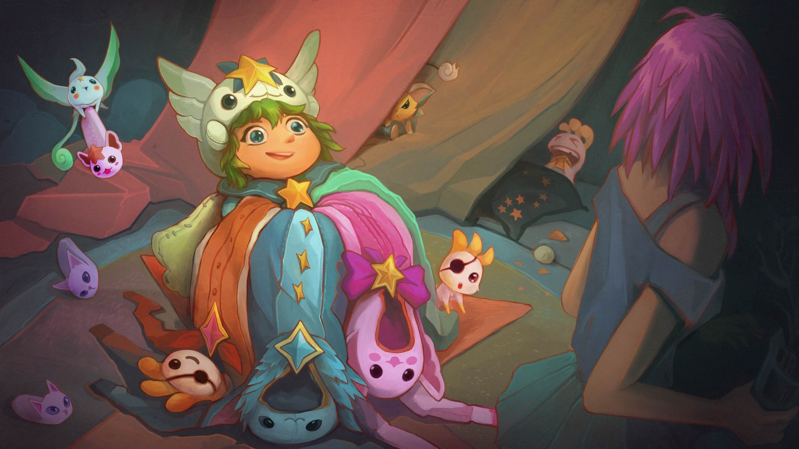

El aire es espeso en la cocina. Aquello que debió haber sido la cena para el equipo ahora son ruinas carbonizadas pegadas a una bandeja metálica para hornear. Toso y sacudo los guantes de horno que aún llevo puestos, tratando de disipar el humo. Abro la ventana, dejando que entre el fresco aire otoñal. Por fin, la alarma se detiene.
Mis ojos se llenan de lágrimas. Me repito a mí misma que por el humo y el desastre con el horno, pero sé que es culpa del lío de lo que sucede en la sala.
''Todo se arruinó''. Mi voz resuena mínima y patética, incluso para mis oídos.
Después, escucho pisadas que se acercan por el suelo de mosaico. Janna o Ez deben haberse enfrentado al humo para ofrecerme un poco de consuelo. Rápidamente me seco los ojos y me sorprendo al dar la vuelta.
Es Fortune.
''Bueno, eso en definitiva no es comestible'', dice.
Asiento con la cabeza. ''Definitivamente no''.
El celular de Fortune vibra por un mensaje de texto. Seguramente era Ahri, contándole todo lo que los chicos populares estaban haciendo.
''Tal vez esta no era la manera en la que querías pasar tu noche de viernes'', le digo.
Tomo los pedazos quemados de lo que era la cena del papel aluminio. ''Siento mucho que Lulu te haya involucrado en todo esto. La cena está arruinada. La fiesta está arruinada. Entiendo a la perfección si quieres irte. Ya nos las arreglaremos''.
Ugh. Demasiadas palabras. ¿Por qué no puedo dejar de hablar cuando ella está cerca? Inhalo profundo y trato de comenzar con mayor claridad.
''Fortune...''
''Sarah'', me interrumpe. ''Puedes llamarme Sarah''.
''Pensé que Sarah es como te dicen tus amigos'', menciono.
El teléfono de Fortune vibra nuevamente. En vez de revisarlo, lo guarda en su bolsillo de atrás. ''Vine a disculparme. Te veías bastante aterrorizada allá''.
''¿Alguna vez has estado del otro lado de una de tus pistolas?''
''No, supongo que no'', se rio. Su voz se tornó seria. ''Debes entender que nunca lastimaría a otra Guardiana. Nunca''.
Asiento. Hay algo más en su declaración, una pena que no ha podido apartar.
''Sé que Ez metió la pata, a veces le pasa, pero, ¿te molestaría si nos quedamos? Soraka estaría bien incluso si la cena solo consistiera en rollos de canela, pero Ez pidió unas pizzas para disculparse por el accidente con el portal. Pero entiendo perfectamente si quieres que nos vayamos...''
Levanto una mano con un guante de horno. Ahora es Sarah quien ha dicho demasiadas palabras.
''Espera, ¿se quieren quedar?''
Sarah abre su boca, pero la interrumpe una Lulu eufórica que entra saltando a la cocina, con un ramo de tela color pastel y listones cayendo al suelo. Nos encaja un montón de tiras de franela blanca a mí y a Sarah en las manos.
''Estas son para ustedes'', trina antes de salir saltando de la cocina.
''Lulu, querida'', la llamo. ''¿Qué son estas?''
Sarah sostiene las suyas por encima de sus hombros, inspeccionando la obra de Lulu.
''Tienes razón'', dice, sonriendo. ''No es así como suelo pasar mis noches de viernes, pero creo que esta pijamada podría llegar a ser un poco divertida''.
''¿De verdad?''
''Bueno, sí''. Su sonrisa toma una forma traviesa. ''Y, siempre quise ver cómo se vería Ezreal con el cabello trenzado''.